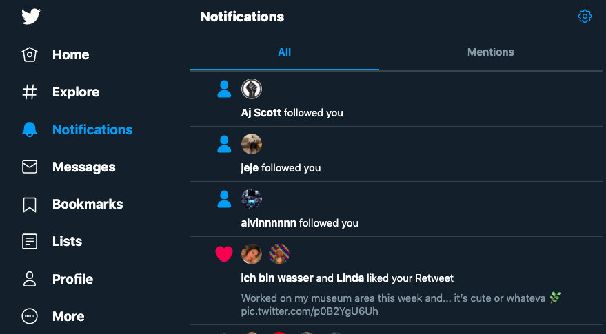
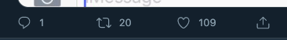

Twitter provides appropriate feedback to users, constantly letting the user know and understand what is going on. An example of this happening is when a user is drafting a tweet. As the user types, a small circle appears near the "Tweet" button that allows the user to see how much space in a tweet they have used from the alotted amount.
Twitter sucessfully provides common words that a user recognizes, rather than using technological terms used by the computer. Phrases that are common in the social media world are shown throughout the website. "Messages," "Followed," "Profile," and "Home" are a few words that are utilized to direct the user.

Twitter supports "undo" options in case a user clicks on something that they either changed their mind about or did not mean to click. When a user is drafting a tweet, there include options to attach a photo, gif, poll, emoji, etc. However, if one of these choices are accidentally clicked on, users have a clear option to get rid of this action.
Users can understand that different actions do different things. When a user stumbles upon a tweet that suits them or that they enjoy, four actions are available: look at replies, retweet, like, or share the tweet outside of the app/website. To make the difference between each action more obvious, the main two actions (retweet or like) are expressed with different colors.
To prevent the risk of errors, Twitter understands that "retweeting" something can be important for a users profile. When a user prompts a retweet, the user is given two options: to simply retweet, or to retweet with a comment. This option provides a second step before the user commits to retweeting.
As a user makes their way around Twitter, there are specific sections of the app/website that will always be available so that the user understands where they need to go for a specific task. The "Home," "Explore," "Notifications," "Messages," etc. apps are constantly local for the user to be brought back to this general page.
Frequent actions are easily accessible, as they are constantly provided no matter what page the user is currently on.
The minimalist design of Twitter allows users to scroll with ease to view tweets, rather than unnecessary information. Under each tweet are options to: look at replies, retweet, like, or share the tweet outside of the app/website. That being said, a small icon is used to represent each of these actions. This provides a small and simple design versus a clutter of words.

test
Twitter provides a help center for users that offers assistance if the user is having trouble.